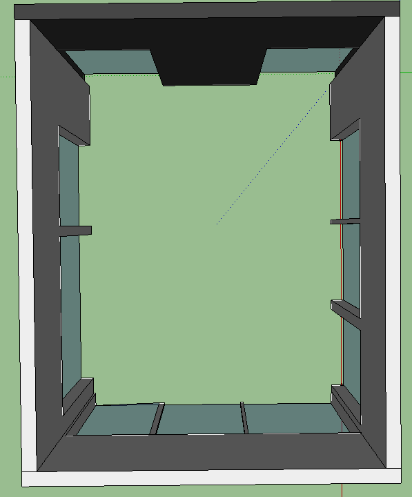
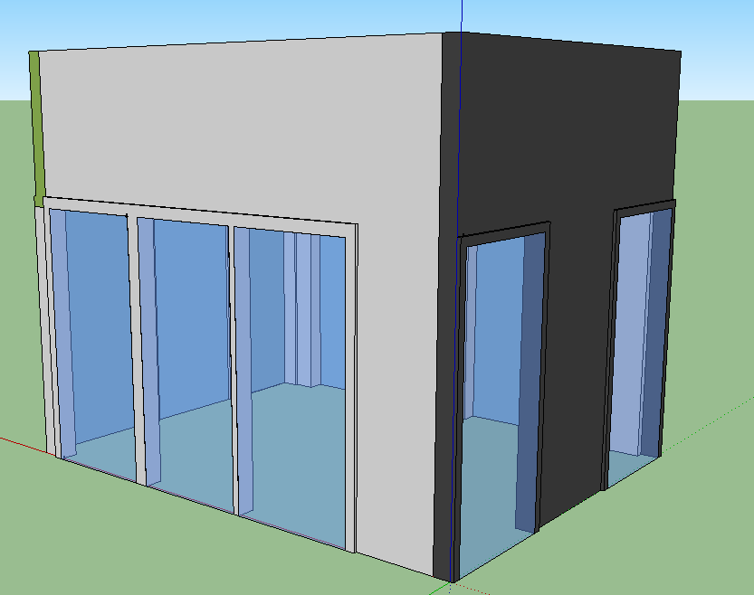
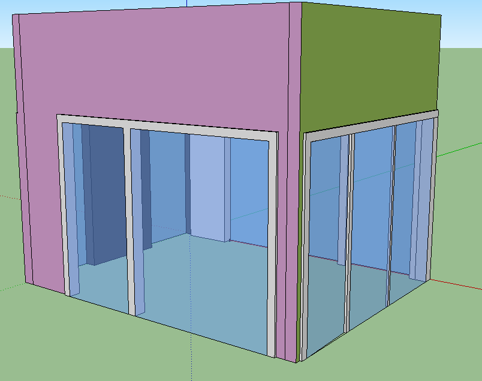

The goal for this project was to map a room of a building located, at C4K building, IX Building on te computer.
We accurately measured using a tape measure various walls and windows and, put The measurements into Google SketchUp.
Also we drew and wrote on paper what it would look like then put in the right measurements into the computer.
We used the app Colorometer to measure the value of the 3 colors of paint and put them into SketchUp.
This project took us about 13 hours to create. We had to measure everything you see here and put it into the computer. we only had one hour every week to work on this so we worked on it in stages.
 When we first started using sketchup we had some difficulties. Because the program is very complex it took us some time just to learn the basics. For example whe we first started we did not have the thickness of the walls they were just flat. Therefore we had to redo the entire room.
Another challenge we faced was putting this website together. I had to learn how to use html and how to put the headings, andtitles together.
What we learned during this project was how to use sketchup and put measurments into the program. Also we learned how to make windows by taking out the space, and then filling in the space with a window. We learned how to give thickness to the walls.
